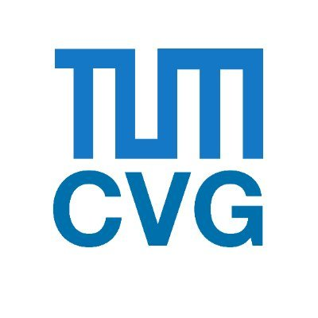

Research Assistant with Dr. Daniel Cremers' Computer Vision Group
January 2025 - Present
- Developed GaussianDet3D as my master's thesis project in Prof. Daniel Cremers' group at TUM, using Gaussian splatting to represent multi-view input images as 3D Gaussians, then converting these into pseudo-LiDAR inputs for a sparse LiDAR detector.
- Achieved the lowest translation (mATE 0.580) and velocity (mAVE 0.378) errors among camera-based methods on the nuScenes test set, improving over BEVFormer by 8.1% and 13.1%.
- Implemented multi-frame Gaussian aggregation with timestamp encoding, cutting velocity error by 64%.
Research Assistant with Dr. Andrea Matic-Flierl and Poulami Sinhamahapatra
May 2024 - September 2026
- Improved the robustness of 3D person detection in indoor environments to withstand adverse conditions such as occlusion and poor lighting.
- Ran Camera based methods, LiDAR based methods, and Camera-LiDAR methods using mmdetection3d toolbox.
Research Assistant with Professor Gerhard Rigoll 's Lab
April 2024 - December 2024
- Worked on 3D object detection and tracking through multi-modal sensor fusion (camera and 4D radar) using View of Delft (VOD) datasets with BEVDepth model as the baseline.
- Implemented BevDet pipeline on VOD using mmdetection3D, achieving a mAP of 40 with BEVDepth model.
- Implemented PointPillars using LiDAR and radar point clouds, achieving a mAP of 75 with LiDAR Pointpillars and 57 with radar PointPillars.
- Enhanced the radar encoder architecture for camera and 4D radar fusion and implemented kernel density estimation method to filter out noisy radar points.
- Some of the results can be seen here.
Research Assistant with Professor Federico Tombari's Lab
October 2023 - February 2024
- Worked with the computer vision team at the CAMP Chair on multimodal learning for autonomous driving utilizing data from different modalities (text, 2D image, and lidar point cloud).
- Transformed Lidar 3D point clouds to depth images.
- Finetuned the ImageBind model using text, camera images, and depth images using nuScenes dataset.
Participant in Google's Computer Science Research Mentorship Program
September 2021 - December 2021
- Mentored by Dr. Leo Cheng, a Google research scientist, regarding research pathways in machine learning and data science.
- Attended a series of individual and pod meetings as well as workshops about research in computer science.
Research Assistant with Professor Shady Elbassuoni
May 2021 - May 2022
- Conducted literature review regarding using deep learning models to optimize the buildings’ operating costs.
- Worked on preprocessing the gathered data, analyzing Beirut weather data, and coming up with useful insights.